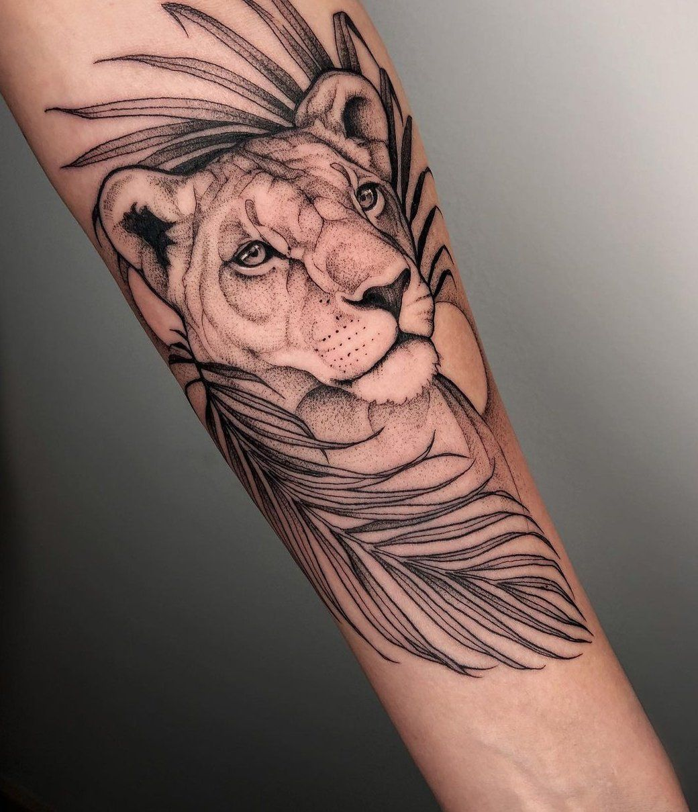

Convención Internacional de Tatuaje
Montevideo, Uruguay
Participación como artista invitado en la convención principal de tatuajes del país.
Soy un tatuador profesional con más de 10 años de experiencia en Montevideo. Mi trabajo fusiona técnica y creatividad para crear tatuajes únicos que reflejen cada historia personal.
Mi especialidad es transformar ideas en arte corporal con un enfoque seguro y profesional, combinando estilos como realismo, tradicional, blackwork y acuarela.

Comencé mi formación con maestros locales, evolucionando hacia una propuesta artística propia donde cada tatuaje es un diseño único con significado.
Mi enfoque combina una técnica rigurosa con un profundo respeto por los detalles, garantizando resultados que no solo impactan al momento, sino que perduran en el tiempo.





Aquí se muestran las próximas apariciones de Gustavo en eventos de tatuaje y arte corporal. Este espacio presenta su trabajo más allá del estudio, como artista activo en la escena.
Montevideo, Uruguay
Participación como artista invitado en la convención principal de tatuajes del país.
Buenos Aires, Argentina
Exposición colectiva de artistas del tatuaje latinoamericano en la galería Arte Vivo.
Montevideo, Uruguay
Taller práctico sobre sombreado, color y traslados de diseño a piel.